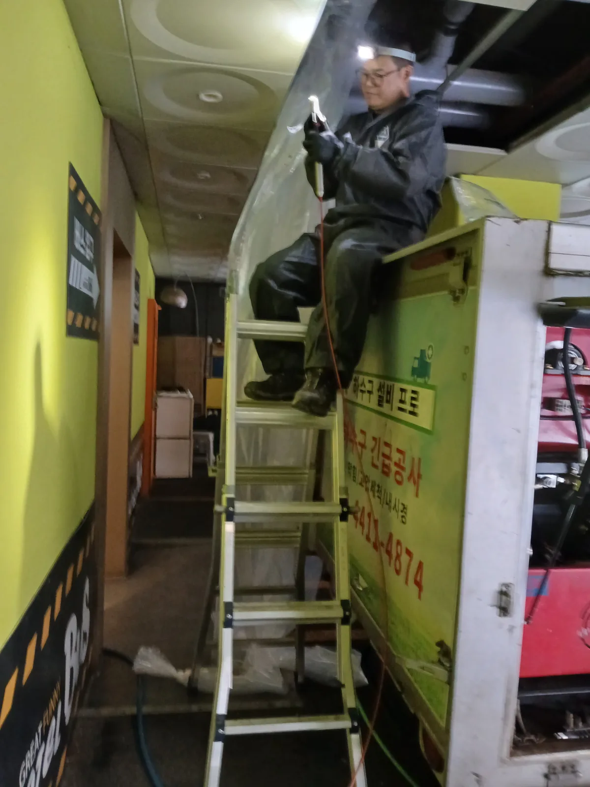

부평구 부평동 변기막힘, 현장 도착 후 진단
인천 부평구 부평동 모텔에서 긴급한 변기막힘 연락을 받고 현장으로 신속하게 출동했습니다. 모텔 변기막힘은 객실 이용과 운영에 바로 영향을 주기 때문에 빠른 도착만큼 정확한 원인 진단이 중요합니다.
먼저 객실 변기의 배수 상태를 확인했습니다. 변기 내부만 막힌 것인지 건물 오수관까지 막힌 것인지 구분하기 위해 변기를 탈거하고 하부 배관을 점검했습니다.
변기 하부 오수관에 물이 빠지지 않고 정체돼 있어 단순 변기막힘이 아닌 메인 오수관막힘으로 판단했습니다. 신라건축설비는 변기 입구만 반복해서 뚫지 않고 막힘이 발생한 배관 경로를 추적해 실제 원인 구간을 찾아 작업합니다.
1단계: 증상 확인과 필요한 장비 작업
부평동 모텔 객실의 변기를 안전하게 탈거한 뒤 변기 하부 오수관 상태를 확인했습니다. 변기 아래 배관에 오수가 고여 있어 객실보다 아래쪽에 위치한 공용 오수관 또는 메인 오수관을 점검해야 했습니다.
변기막혔을때 관통기나 석션으로 변기만 반복해서 작업하면 깊은 곳의 오수관막힘이 그대로 남을 수 있습니다. 이번 인천 변기막힘 현장도 작업 범위를 객실에 한정하지 않고 주차장 천장의 하부 배관까지 확대했습니다.
객실 변기와 연결된 오수관 경로를 확인한 뒤 장비를 이동해 주차장으로 내려갔습니다. 단순 막힘 작업에서 끝내지 않고 건물 전체 배수에 영향을 줄 수 있는 메인 오수관을 직접 찾아 점검했습니다.

2단계: 원인 구간 처리와 정상 작동 확인
주차장 천장 내부에서 객실 변기와 연결된 메인 오수관을 확인했습니다. 사다리를 설치하고 오수가 주변으로 튀지 않도록 작업 구간을 보양한 뒤 배관 관통 장비를 메인 오수관에 투입했습니다.
부평동 오수관막힘이 발생한 구간을 반복적으로 공략해 내부에 쌓인 이물질을 제거하고 좁아진 배수 통로를 확보했습니다. 막힌 부분을 뚫는 과정에서도 현장 상황을 계속 확인하며 배관 손상 없이 안전하게 작업했습니다.
메인 오수관 작업을 마친 뒤 객실 변기에 물을 내려 변기 배수 상태를 확인했습니다. 주차장 천장의 하부 오수관까지 물이 원활하게 흐르는지 점검하고 변기막힘과 오수관막힘이 모두 해소된 것을 확인했습니다.

작업 결과와 재발 방지 안내
인천 부평구 부평동 모텔 변기막힘의 실제 원인은 주차장 천장 내부의 메인 오수관막힘이었습니다. 신라건축설비는 변기 탈거로 막힘 원인을 확인하고 배관 경로를 추적해 하부 메인 오수관까지 직접 작업했습니다.
이번 현장은 일반적인 변기 관통작업보다 작업 범위가 큰 고난도 오수관막힘 현장이었습니다. 객실 변기만 작업했다면 막힘이 다시 발생할 수 있었지만, 원인이 있던 주차장 메인 오수관을 집중적으로 뚫어 배수 기능을 정상화했습니다.
여러 객실의 변기 물이 동시에 느리게 내려가거나 변기역류와 오수 냄새가 반복된다면 개별 변기막힘이 아니라 공용배관막힘 또는 메인 오수관막힘일 수 있습니다. 이런 경우에는 변기뿐만 아니라 건물 하부 배관과 메인 오수관까지 함께 점검해야 재발 가능성을 줄일 수 있습니다.
신라건축설비는 변기막힘·싱크대막힘·하수구막힘 같은 긴급 생활 배관 문제부터 모텔·상가·대기업 건물의 공용배관막힘, 메인 오수관막힘, 고압세척 및 대형 배관공사까지 대응합니다. 서울·경기·인천 전 지역에 24시간 긴급출동하며, 전문 장비와 풍부한 현장 경험을 바탕으로 정확한 원인을 찾아 당일 해결을 목표로 작업합니다.
인천 변기막힘, 부평구 변기막힘, 부평동 변기막힘, 모텔 변기막힘, 변기역류, 오수관막힘, 공용배관막힘 또는 메인 오수관 작업이 필요하다면 막힘 전문 신라건축설비가 신속하게 출동하겠습니다.
최종 조치: 객실 변기를 탈거해 오수관막힘을 진단한 뒤 배관 경로를 따라 주차장으로 이동했습니다. 천장 내부의 메인 오수관을 찾아 전문 관통 장비를 투입하고 막힌 구간을 집중적으로 작업해 오수관의 통수 기능을 복구했습니다.
현장 방문 전 확인하는 비용과 작업 범위
신라건축설비는 현장 증상과 배관 구조를 확인한 뒤 필요한 작업과 예상 비용을 안내합니다. 단순 관통으로 해결되는지, 배관내시경·석션·고압세척 또는 변기 탈거가 필요한지는 현장 상태에 따라 달라집니다. 출장비와 야간 작업비, 추가 장비 비용이 발생할 수 있는 경우 작업 전에 먼저 설명하고 동의를 받은 범위에서 진행합니다.
업체를 선택할 때 확인할 사항
무조건적인 ‘0원’ 표현보다 실제 작업 범위, 추가 비용 조건, 사용 장비와 사후 대응 기준을 확인하는 것이 중요합니다. 해결되지 않았을 때의 비용 기준과 작업 후 동일 증상 발생 시 점검 범위를 사전에 문의해두면 불필요한 분쟁을 줄일 수 있습니다.
부평구 변기막힘 자주 묻는 질문
변기를 꼭 탈거해야 하나요?
부평동 모텔 객실의 변기 물이 내려가지 않고 다시 차오르는 변기막힘이 발생했습니다. 객실 운영에 직접적인 불편이 생긴 긴급한 상황으로, 신라건축설비가 전문 장비를 준비해 신속하게 출동했습니다.처럼 증상이 나타나더라도 원인은 현장마다 다를 수 있습니다. 장비와 배관 구조를 확인한 뒤 필요한 작업 범위를 안내합니다.
작업 전 비용을 알 수 있나요?
작업 전 증상과 현장 여건을 확인해 예상 범위와 비용을 먼저 안내합니다. 변기 탈거, 장비 추가 투입 또는 공용배관 작업이 필요한 경우 고객 동의 없이 임의로 진행하지 않습니다.
같은 증상이 다시 생기면 어떻게 하나요?
완료 후 정상 작동을 함께 확인하고 작업 범위에 따른 사후 안내를 드립니다. 동일 증상이 반복되면 현장 기록을 기준으로 원인을 다시 점검합니다.
변기막힘 서울·경기 출동지역
신라건축설비는 부평구 부평동 현장을 포함해 서울 25개 구와 경기도 31개 시·군의 배관 문제를 상담합니다. 현장 거리와 기사 배정 상황에 따라 출동 가능 여부를 먼저 안내드립니다.
서울 전 지역
강남구 · 강동구 · 강북구 · 강서구 · 관악구 · 광진구 · 구로구 · 금천구 · 노원구 · 도봉구 · 동대문구 · 동작구 · 마포구 · 서대문구 · 서초구 · 성동구 · 성북구 · 송파구 · 양천구 · 영등포구 · 용산구 · 은평구 · 종로구 · 중구 · 중랑구
경기도 주요 출동지역
수원시 · 용인시 · 고양시 · 화성시 · 성남시 · 부천시 · 남양주시 · 안산시 · 평택시 · 안양시 · 시흥시 · 파주시 · 김포시 · 의정부시 · 광주시 · 하남시 · 광명시 · 군포시 · 양주시 · 오산시 · 이천시 · 안성시 · 구리시 · 의왕시 · 포천시 · 양평군 · 여주시 · 동두천시 · 과천시 · 가평군 · 연천군